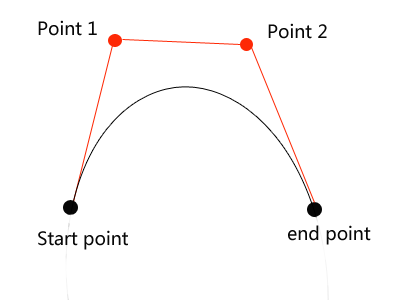
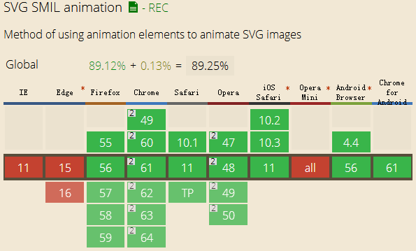
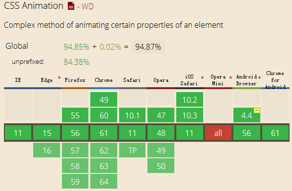

Animation has a complex point —— Bezier curve animation. It's usually hard to understand. However, if you want to achieve some complex animation, you have to use it. Actually, it's easier than you thought. For the front end development, we have three methods to do the bezier curve: SVG, Canvas and CSS3. SVG and Canvas look the same, but CSS3 is a little bit different. Let's just see a conclusion first, and then I will show the details.
1. Conclusion
(1) Draw bezier curve line: Canvas and SVG
(2) Do bezier curve animation: Canvas, SVG, CSS3
2. Bezier curve line
Read the conclusion, read the conclusion, read the conclusion. You must know it's better not to use CSS3 to draw bezier curve line, CSS3 is not good at it. So it's time to show the magic of Canvas and SVG.
(1) Canvas
In Canvas, there is a method we can use: bezierCurveTo(x1,y1,x2,y2,x3,y3). It has three parameters, the reference point (x1, y1), (x2, y2) and the final point (x3,y3). Let's see a picture:

If you want to learn how the bezier curve is created, just go to Wiki. Now, let's see how Canvas achieves this effect. Just an instance:
var thecanvas = document.querySelector("canvas");
var context = thecanvas.getContext("2d");
context.beginPath();
context.moveTo(100,350);
context.bezierCurveTo(100,50,200,50,200,350);
context.stroke();
The bezier curve need four points: one start point, two reference points and one end point. The "moveTo()" method creates the start point, if not, default (0,0). The effect is like follows:
(2) SVG
In the SVG, things are the same, the only different is grammar. In SVG, we use "path" label and it's "C","S","Q","T" commands. Let's see an example which has the same effect.
The "M" command is just like "moveTo" of Canvas. And "C" command is like "bezierCurveTo()" method, you can see it also has three point, but between every point's x and y, we do not need ",". They look the same, oh? Let's see the effect:
Yes, the same! It means you can use either of them to draw the curve lines. And their compatibilities are also the same: IE9+. You can choose what you want.
At the end of this part, I will say it's hard for CSS3 to draw the bezier curve lines, if you do not believe, just try and tell me how to achieve. I mean CSS3 could draw the curve by using "border" tips, but it's a totally different thing with bezier curve. For example, you can use Canvas and SVG to draw sea waves easily, but how about CSS3? Do you want to draw lots of borders? So, drawing curve lines is a shortcoming of CSS3. But when it comes to the animation, things are different.
3. Bezier curve animation
(1) SVG
You should know, SVG can do lots of things, and it's so convenient. It has professional labels for animation, let's see an example directly:
If you cannot see the effect or animation, just change your browser, it's too old, I forget to say, though the SVG animation is easy to use, its compatibility is not so good. Until now, the edge IE still cannot support it.

So if we want to compate IE, what should we do? CSS3 animation!
(2) CSS3
Actually, it has a "cubic-bezier" function, but it cannot be used to make animation, its function is only to control the mode of moving, you know, for example, "ease-in" and "ease-out" are two modes of moving. So in CSS3 we should use "animation" to imitate the bezier curve animation. Let's see an instance:
For convenience, I would like to use a block in this example. You can see it works well. If you still cannot see the animation example, emmmmmmm, shut down your computer and do something else, OK? -.- And let's see the compatibility, pretty good! IE10+.

(3) Canvas
Canvas animation has the best compatibility among the three. Because it doesn't use any methods or functions, just Canvas and formula of curve caculation. So its compatibility is IE9+. Let's see the example:
window.addEventListener('load',canvasApp,false);
function canvasApp(){
function drawScreen(){
context.fillStyle = '#eee'
context.fillRect(0,0,theCanvas.width,theCanvas.height);
context.strokeStyle = '#eee'
context.strokeRect(1,1,theCanvas.width,theCanvas.height);
var t = ball.t;
var cx = 3*(p1.x-p0.x);
var bx = 3*(p2.x-p1.x)-cx;
var ax = p3.x-p0.x-cx-bx;
var cy = 3*(p1.y-p0.y);
var by = 3*(p2.y-p1.y)-cy;
var ay = p3.y-p0.y-cy-by;
var xt = ax*(t*t*t)+bx*(t*t)+cx*t+p0.x;
var yt = ay*(t*t*t)+by*(t*t)+cy*t+p0.y;
ball.t +=ball.speed;
if(ball.t>1){
ball.t=1;
}
points.push({x:xt,y:yt});
for(var i =0;i < points.length;i++){
context.fillRect(points[i].x,points[i].y,1,1);
}
context.closePath();
context.fillStyle="#000000 ";
context.beginPath();
context.arc(xt,yt,5,0,Math.PI*2,true);
context.closePath();
context.fill();
}
var p0={x:60,y:10};
var p1={x:70,y:200};
var p2={x:125,y:295};
var p3={x:350,y:350};
var ball={x:0,y:0,speed:.01,t:0};
var points=new Array();
theCanvas = document.getElementById('canvas')
context = theCanvas.getContext("2d")
setInterval(drawScreen,33);
}
You know, in the code, I use the bezier curve caculation formula to compute the (x,y) of point. In order to have a better effect, you can click here.
Ok, finally conclusion:
If you want to draw complex curve lines(Because "border" can draw the simple curve line), just use SVG or Canvas, both are fine. But if you want to make curve animation, just use Canvas or CSS3.
Though I don't recommend you to use SVG animation because its bad compatibility in IE now, in the future, SVG animation will become the most mainstream tool for its convenience and clear code. Just trust me.
(That's all)